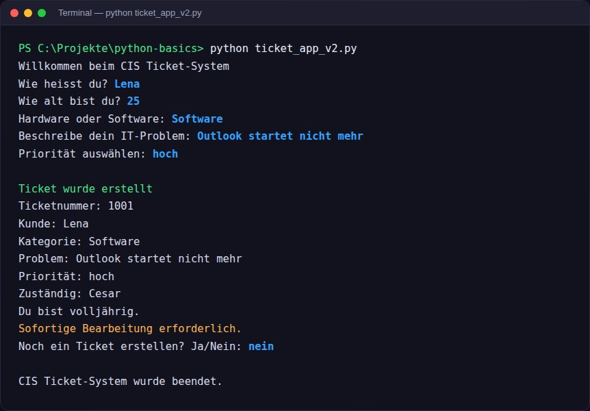

Projekte
Sechs Projekte, sechs unterschiedliche Herausforderungen, vom eigenen IT-Support-Business über eine React-App bis zu den Grundlagen in Python. Filtere nach Kategorie und klicke ein Projekt an für Details.
6 Projekte

CIS – C IT Support
Website für meinen eigenen IT-Support-Service in Aargau: animierter Matrix-Hintergrund per Canvas, transparente Preispakete und ein Kontaktformular.

ParkApp KSTA
Mobile-first React-Prototyp für die Parkplatz-Buchung beim Steueramt Zürich, der komplette Prozess vom Suchen über die Anfrage bis zur Bestätigung.

LS Studio
Website für ein Luxury Nail Studio in Aarau, mutiges 90s/Y2K-Branding komplett im Code umgesetzt, mit Barrierefreiheit von Anfang an.

C Visionary Studio
Mehrseitige Website für ein Studio, das KI-generierte Videos und Bilder für KMU erstellt, mit Leistungen, Preisseite und Anfrage-Funnel.

Helvetic Narcos
Atmosphärische Landingpage für ein Streetwear-Label, inszeniertes Scroll-Erlebnis mit Intro-Sequenz, Countdown und eigenem Deployment-Script.

Programmier-Grundlagen
Viele kleine Übungsprojekte in Python, begleitet von einem selbst konfigurierten GPT-Mentor, der mich wie ein Senior-Entwickler ausbildet.
Fragen zu einem Projekt?
Zu den privaten Repositories gebe ich auf Anfrage gerne Einblick.
Kontakt aufnehmen